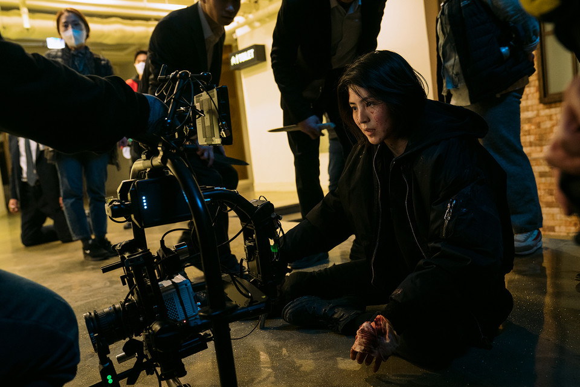

아빠를 잃었다. 그것도 바로 눈앞에서.
남은 딸은 결심한다.
반드시 내 손으로 복수하겠노라고.
목표를 위해서라면 방법은 상관없다.
마약 조직의 언더커버가 되어 경찰에 잠입하는 것이라 해도.

1. 1화
최악의 생일이었다. 생일을 축하해주러 찾아온 아빠의 죽음을 눈앞에서 목격한 윤지우.
복수에 혈안이 된 그녀는 무모한 행동도 서슴지 않는다. 범인을 찾을 가능성만 있다면.

2. 2화
최무진은 도강재에게 엄중한 벌을 내린다. 그러고는 지우를 밖으로 불러낸 무진의 한 마디.
오늘 윤지우는 죽었다! 몇 년 후, 지우는 새로운 신분으로 경찰에 잠입한다.

3. 3화
타깃을 체포하러 출동하는 마수대. 지우는 뜻밖의 상황에 당황하지만,
이내 서둘러 행동에 나선다. 한편 악의에 찬 보스가 이끄는 신흥 마약 조직이
무진의 제국을 위협한다.